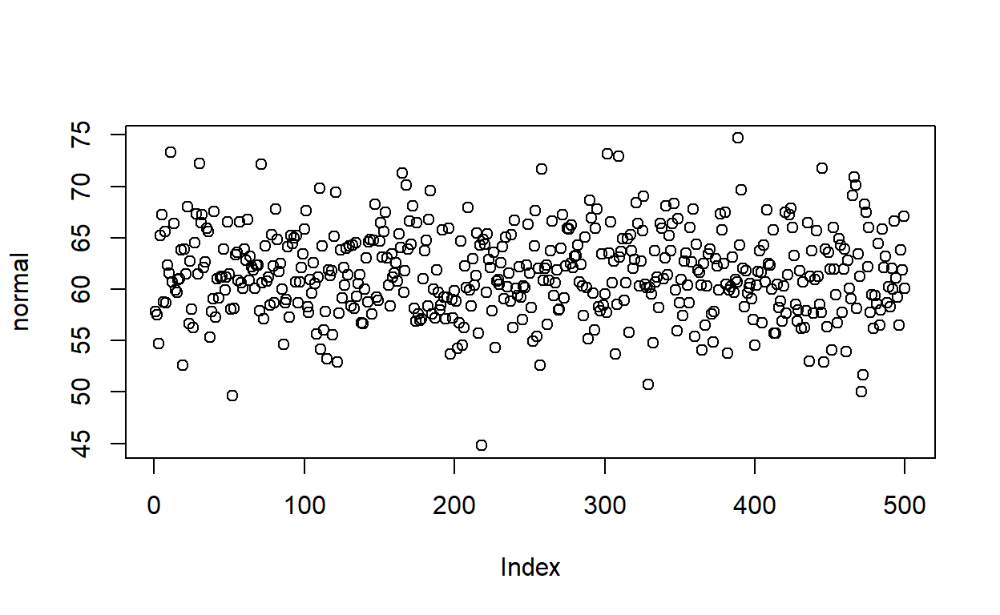

LAB MATERIALS
Lab 1 Goals
- Estimate crude measures of (linear) association using univariable
linear regression models
- Estimate crude measures of non-linear association using univariable
linear regression models with linear transformed and categorical
variables.
- Estimate adjusted measures of association using multivariable linear regression models
Data and assignment
The assignment and dataset are both available on Sakai.
Lab 1 Grading scheme
| Competency | Points |
|---|---|
| Table 1a - Pearson CC | 3 |
| Table 1b - Spearman rank CC | 3 |
| Table 2 - Univariate models | 10 |
| Table 3 - F Statistic | 3 |
| Task 4 - Multivariable models | 10 |
| Figures | 15 (1 point each) |
| Short answers 1 - 7 | 56 (8 points each) |
| Total | 100 |
Packages
- {moments}
- {car}
- {tidyverse}
Competencies:
Import data from .csv
Comma separated values
(.csv)
CSV stands for comma separated values. Its a way of organizing
data. When a file extension reads .csv, spreadsheet
applications like Excel understand that to mean that the data are stored
according to a simple set of rules.
See if you can spot the pattern.
The raw data might look like this:
Name, Date, App, date location, date ranking, second date
John, 01-19-2019, Bumble, sip and paint, 7, 0
Niko, 02-14-2019, Hinge, sky diving, 10, 0
Arwin, 02-28-2019, Bumble, ice skating, 8, 0
Chad, 03-12-2019, Tinder, movie night, 4, 0
Oleksiy, 03-15-2019, Bumble, axe throwing, 8, 0
Manuel, 03-19-2019, Bumble, bike ride, 9, 0
Vince, 03-27-2019, Ship, barcade, 7, 0
Adamu, 04-01-2019, Hinge, botanical garden, 8.5, 0
Ryan, 04-21-2019, Christian mingle, mass, 7.5, 0And a spreadsheet application (e.g.Microsoft Excel) would display the data like this:
Which in R Studio, would look like this:
| Name | Date | App | date location | date ranking | second date |
|---|---|---|---|---|---|
| John | 01-19-2019 | Bumble | sip and paint | 6.9 | 0 |
| Niko | 02-14-2019 | Hinge | sky diving | 9.9 | 0 |
| Arwin | 02-28-2019 | Bumble | ice skating | 8.2 | 0 |
| Chad | 03-12-2019 | Tinder | movie night | 4.4 | 0 |
| Oleksiy | 03-15-2019 | Bumble | axe throwing | 8.3 | 0 |
| Manuel | 03-19-2019 | Bumble | bike ride | 8.9 | 0 |
| Vince | 03-27-2019 | Ship | barcade | 7.3 | 0 |
| Adamu | 04-01-2019 | Hinge | botanical garden | 8.5 | 0 |
| Ryan | 04-21-2019 | Christian mingle | mass | 7.5 | 0 |
Expand for the four simple rules of .csv data
commas delineate columns
a new line delineates a new row
the first row of data determines column names and number of columns
the values between commas are data
Import from .csv
(read.csv())
read.csv() works a lot like readRDS(),
except it can interact with .csv files.
Before you try to import your data, do yourself a favor and open the .csv file in Excel to inspect it.
Now that youve done that, note that read.csv() allows
the following arguments relevant to importing this labs data:
file = ""- just likereadRDS, you need to provide a file name in quotesheader =- this argument takes eitherTRUEorFALSE. If set toTRUE, the function will use the first row of the data as the column names (headers)col.names = c()- takes a vector that is the same length as the number of columns in the dataset. It will use the values in this vector as the column names.
Here is an example:
Plots with {ggplot2}
Histograms
(geom_histogram())
If you need a refresher on creating histograms with {ggplot2}, you can find it here.
Scatter plots
(geom_point())
We create scatter plots by assigning an x and
y aesthetic (aes()) to a ggplot object, and
then adding a layer called geom_point()
Q-Q Plots (qqnorm())
A Q-Q plot allows us to compare a variables observed distribution against its theoretical distribution. It does this by taking a continuous variable, converting each value to a Z-score (using the variables mean and standard deviation), and then plotting the Z-score against the original observed value.
To do this in R, we might start by creating a qqnorm
object using qqnorm():
As an example, here are first 10 values of
regdat$weight. Observed Values are the actual data, and
Z-values are the Z-score for each of those values of
weight:
| Observed Values | Z Values |
|---|---|
| 85.0 | -0.6979123 |
| 105.0 | 0.1272606 |
| 108.0 | 0.2675710 |
| 92.0 | -0.4018917 |
| 112.5 | 0.7389858 |
| 112.0 | 0.4482006 |
| 104.0 | 0.0847131 |
| 69.0 | -1.9916133 |
| 94.5 | -0.2348232 |
| 68.5 | -2.0751279 |
We can use qqnorm() to calculate and plot these values
automatically!
Here is the Q-Q plot for regdat$weight, with histogram
for reference. Notice that the y-axis is labelled Sample Quantiles and
its range is the minimum and maximum weight in regdat, while the x-axis
is labelled Theoretical Quantiles and ranges from -3 to 3. Why
might that be?
Note on Q-Q Plots
For a quick comparison, we can use a simple model to visualize how a truly normal distribution would appear on a Q-Q plot:
If we extract the mean and standard deviation from our height, we can construct a normal distribution and plot it.
# calculate mean of height
x_hat <- mean(regdat$height)
# calculate sd of height
x_sd <- sd(regdat$height)
# simulate a normal distribution using height's mean and sd
normal <- rnorm(500, mean = x_hat, sd = x_sd)
# scatter plot
plot(normal)
# histogram
hist(normal)
# Q-Q plot
qqnorm(normal)

Bonus: qqnorm(), but
with ggplot()
For those interested:
Remember the discussion about how most objects contain more information than initially meets the eye?
The same goes for qqnorm objects. They arent just a
bunch of dots. They contain vectors of the theoretical and observed
(Sampled) quantiles. If we convert the qqnorm object to a
data.frame, we can use ggplot() to call those
specific columns for plotting. Lets look at how we would make a Q-Q
plot for the natural log of weight:
# calculate ln_wt
regdat$ln_wt <- log(regdat$weight)
# create qqnorm() object and convert to data.frame() object
qqnorm_data <- data.frame(qqnorm(regdat$ln_wt, plot.it = FALSE))
# plot in ggplot
ggplot(data = qqnorm_data, aes(x = x, y = y)) +
geom_point(shape = 1, size = 3) +
labs(title = "Q-Q plot for ln(weight)") +
xlab("Theoretical Quantiles for ln_wt") +
ylab("Sample Quantiles for ln_wt")
Creating new variables
log() transform
In R, log() takes the natural log of a given value:
If given a vector of values, log() will take the natural
log of each of those values individually:
Not relevant to Lab 01, but you can also specify what base you want
your log to be in with the argument base =:
log(simple_vector, base = 10)
#> [1] 0 1 2 3
Why do a log transformation?
Imagine we have a variable that is highly right-skewed. The histogram of that variable might look something like this:
We can use a natural log transformation to make the variables distribution more normal, and therefore suitable for linear regression:
The natural log transformation uses Eulers number (2.718) as its base (in contrast, a base 10 log transformation uses 10 as the base). So:
\[ \begin{eqnarray} ln(2) &=& 0.693\\ \rm{because} \ 2.718^.693 &=& 2 \end{eqnarray} \]
Using a log transformation can help to pull in outlier values, which has the benefit of making the distribution more Normally distributed and reduce skew, although it doesnt affect kurtosis.
Squaring with ^2
In R, you can raise a base by any exponent using ^. For
example, 103 would be written like this:
10^3
#> [1] 1000
If you give R a vector of numbers, followed by an exponent, it will perform the operation on each value individually:
simple_vector <- c(3, 3.3, 12, 1)
simple_vector^2
#> [1] 9.00 10.89 144.00 1.00
Categorical variables with
case_when()
For a refresher on how to generate categorical variables from
continuous variables, you can refer back to when we created
magec in last 705, Lab 0.
Skewness and Kurtosis ({moments} package)
In evaluating the skewness and kurtosis values, a variable that is perfectly normally distributed will have a skewness of 0 and a kurtosis of 3.
So for example, if a variable has a skewness of -0.05 and a kurtosis of 2.2, we would conclude that the data are slightly left skewed (negative value) and there is some kurtosis.
More specifically, because kurstosis, 2.2 < 3, we conclude that there are less data in the tails. If the value for kurtosis had been greater than 3, we would have concluded that the variable has more data in the tails than expected under a normal distribution.
In R, we can calculate both skewness and kurtosis using a package
called {moments} and its handy functions skewness() and
kurtosis():
skewness(regdat$weight)
kurtosis(regdat$weight)
#> [1] 0.5843876
#> [1] 3.765937
Pearson and Spearman rank correlation coefficients
We use correlation coefficients to measure the strength and direction of the linear association between two continuous variables.
Correlation coefficients can range from -1 to 1. Values closer to 1 represent a strong positive correlation. Those closer to -1 represent a strong negative correlation. The closer the correlation coefficient, R, is to 0, the weaker the association between the two variables.


To calculate in R, use the function:
cor(x, y,
method = c("pearson", "kendall", "spearman"))` Specify your x and y variables and set the method to your cheeky brit of choice.
If no method is specified, pearson is the default.
Bonus: Correlation coefficient matrices
If you want to have a very particular kind of fun, try the following:
- Take your
regdatdata and create a new data frame of only continuous variables fromregdat. Give it a new name, likecont_data.
- Use R to run
cor(cont_data), where the data frame of continuous variable vectors is the only argument.
What did it do? (Go look at Table 1 in the assignment.)
Linear Regression Models
Building models in R is fun!
Univariate
(single-variable) models with lm()
Remember the concept of R formulas?
Regression models make use of formulas in a very intuitive way. Here is the general format:
lm(response_var ~ predictor_var, data = a_data_frame)
lm stands for linear model. If we assign a name to our
model, we can access various components within the model, which we can
index with $.
We can also just use summary() to view an overview of
the models most important components.
Call:
lm(formula = Sepal.Length ~ Petal.Length, data = iris)
Residuals:
Min 1Q Median 3Q Max
-1.24675 -0.29657 -0.01515 0.27676 1.00269
Coefficients:
Estimate Std. Error t value Pr(>|t|)
(Intercept) 4.30660 0.07839 54.94 <2e-16 ***
Petal.Length 0.40892 0.01889 21.65 <2e-16 ***
---
Signif. codes: 0 '***' 0.001 '**' 0.01 '*' 0.05 '.' 0.1 ' ' 1
Residual standard error: 0.4071 on 148 degrees of freedom
Multiple R-squared: 0.76, Adjusted R-squared: 0.7583
F-statistic: 468.6 on 1 and 148 DF, p-value: < 2.2e-16Multivariable models with
lm()
You can also use lm() to program models with multiple
linear predictor variables. You can formulate your equation as you build
your model, using arithmetic operators on the right-hand side of the
formula:
lm(response_var ~ predictor_var1 + predictor_var2, data = a_data_frame)
Call:
lm(formula = Sepal.Length ~ Petal.Length + Species, data = iris)
Residuals:
Min 1Q Median 3Q Max
-0.75310 -0.23142 -0.00081 0.23085 1.03100
Coefficients:
Estimate Std. Error t value Pr(>|t|)
(Intercept) 3.68353 0.10610 34.719 < 2e-16 ***
Petal.Length 0.90456 0.06479 13.962 < 2e-16 ***
Speciesversicolor -1.60097 0.19347 -8.275 7.37e-14 ***
Speciesvirginica -2.11767 0.27346 -7.744 1.48e-12 ***
---
Signif. codes: 0 '***' 0.001 '**' 0.01 '*' 0.05 '.' 0.1 ' ' 1
Residual standard error: 0.338 on 146 degrees of freedom
Multiple R-squared: 0.8367, Adjusted R-squared: 0.8334
F-statistic: 249.4 on 3 and 146 DF, p-value: < 2.2e-16Linear models: a brief tour
In this section, well show you how to access a models coefficients, confidence intervals, residuals, and other values that might come in handy.
Remember how we said that you can extract numbers from your model
when you assign it a name? If we inspect m1 using
$ to index the object by name, well see some useful items
at our disposal.
You can obtain the models coefficients with
coef(your_model). For example:
coef(m1)
(Intercept) Petal.Length
4.3066034 0.4089223 And you can calculate 95% confidence intervals with
confint(your_model, level = 0.95). For example:
confint(m1, level = .95)
2.5 % 97.5 %
(Intercept) 4.1516972 4.4615096
Petal.Length 0.3715907 0.4462539And dont forget that you can inspect your model with
summary():
summary(m1)
Call:
lm(formula = Sepal.Length ~ Petal.Length, data = iris)
Residuals:
Min 1Q Median 3Q Max
-1.24675 -0.29657 -0.01515 0.27676 1.00269
Coefficients:
Estimate Std. Error t value Pr(>|t|)
(Intercept) 4.30660 0.07839 54.94 <2e-16 ***
Petal.Length 0.40892 0.01889 21.65 <2e-16 ***
---
Signif. codes: 0 '***' 0.001 '**' 0.01 '*' 0.05 '.' 0.1 ' ' 1
Residual standard error: 0.4071 on 148 degrees of freedom
Multiple R-squared: 0.76, Adjusted R-squared: 0.7583
F-statistic: 468.6 on 1 and 148 DF, p-value: < 2.2e-16Our model contains the columns of data (variables) used in its calculation:
head(m1$model)
Sepal.Length Petal.Length
1 5.1 1.4
2 4.9 1.4
3 4.7 1.3
4 4.6 1.5
5 5.0 1.4
6 5.4 1.7It also has the resulting fitted values:
head(m1$fitted.values)
1 2 3 4 5 6
4.879095 4.879095 4.838202 4.919987 4.879095 5.001771 The fitted values are what result when we plug each row into the model equation. We can use the first row of our data to observe this directly:
x <- m1$model[1,2] # Petal.Length of row 1
B0 <- m1$coefficients[1] # beta-naught
B1 <- m1$coefficients[2] # beta-one
# formula:
fitted <- B0 + B1 * x
fitted
(Intercept)
4.879095 The resulting value is the fitted value, or the estimate of the
response variable according to our model, given the value of the
predictor, Petal.Length (which for the first row in our
data, is 1.4).
Notice that our model also contains residuals, or the differences between our observed values for y (our response variable), and the values predicted by our model:
head(m1$residuals)
1 2 3 4 5 6
0.2209054 0.0209054 -0.1382024 -0.3199868 0.1209054 0.3982287 We can find the first rows residual value with the
fitted value that we calculated above:
# observed Sepal.Length of row 1 minus the predicted/fitted value:
m1$model[1,1] - fitted
(Intercept)
0.2209054 Plotting line of best fit
{ggplot2} provides a wide variety of flexible tools for visualizing models. There are two main ways we might visualize a regression model. The best way to do this is to fit the model and then plot the prediction (often referred to as the line of best fit)
You can also use functions within {ggplot2} to generate a line of best fit. This is a technique that we will encounter later in the semester that is handy in special circumstances. But for now, please use the method that follows.
Model first, then plot
We can plot our data and line of best fit by using a model as the data object required by {ggplot2}.
Remember our example model from earlier:
Call:
lm(formula = Sepal.Length ~ Petal.Length, data = iris)
Residuals:
Min 1Q Median 3Q Max
-1.24675 -0.29657 -0.01515 0.27676 1.00269
Coefficients:
Estimate Std. Error t value Pr(>|t|)
(Intercept) 4.30660 0.07839 54.94 <2e-16 ***
Petal.Length 0.40892 0.01889 21.65 <2e-16 ***
---
Signif. codes: 0 '***' 0.001 '**' 0.01 '*' 0.05 '.' 0.1 ' ' 1
Residual standard error: 0.4071 on 148 degrees of freedom
Multiple R-squared: 0.76, Adjusted R-squared: 0.7583
F-statistic: 468.6 on 1 and 148 DF, p-value: < 2.2e-16m1 will serve as our data object within
ggplot(). We can start by creating a scatter plot of the
response and predictor variables from our formula. But instead of using
the original data frame (regdat), well use
data = m1:
p <- ggplot(data = m1, aes(x = Petal.Length, y = Sepal.Length)) +
geom_point()
p

From here, we can add a geom_smooth() layer to fit an
ordinary least squares regression line to our data. Notice that within
the model m1, we have access to a variable,
.fitted. We need to assign this to the y-axis of our plot.
This will plot a line for Petal.Length against our
fitted/predicted values!
p + geom_smooth(aes(y = .fitted))
Understanding how this method works will become more important as our models increase in complexity. It also will helps in plotting residuals (see next section).
Plot first, then model
To perform this method, we need to start with a scatter plot using {ggplot2}:
p2 <- ggplot(data = toy, aes(x = ran1, y = pos)) +
geom_point() +
labs(x = "Age (years)", y = "Points", title = "This is fake data")
p2

Once we have our plot, we just need to add another layer,
stat_smooth(), and designate a method and formula. Here,
were building a univariate, linear model. Observe how we parameterize
these details within the stat_smooth() function:
p2 + stat_smooth(method = "lm", formula = y ~ x)
Notice that if we dont designate a method,
stat_smooth() will default to plotting a smoothed loess
line, which well learn more about later in the semester:
p2 + stat_smooth(formula = y ~ x)
For those curious, we can also print our models equation in the plot. The code is a bit dense, but straightforward:
require(ggpmisc)
p2 + stat_smooth(method = "lm", formula = y ~ x) +
stat_poly_eq(formula = y ~ x,
aes(label = paste(..eq.label..,
..rr.label..,
sep = "~~~")),
parse = TRUE)
Model Evaluation
Once weve built a model, there are various measures we might use to evaluate how well that model fits our data. Here we discuss two of those measures: residuals and heteroscedasticity.
Residuals plots
Our model object contains a vector of residuals, which are the observed Y minus the predicted Y:
head(m1$residuals)
1 2 3 4 5 6
0.2209054 0.0209054 -0.1382024 -0.3199868 0.1209054 0.3982287 We could generate a histogram of our residuals. In the following
code, notice that {ggplot2} finds our residuals when we refer to them as
.resid:
ggplot(data = m1, aes(x = .resid)) +
geom_histogram(binwidth = .1, fill = "seagreen") +
xlab('Residuals') +
ggtitle("Histogram of residuals of Iris Petal Length regressed on Sepal Length")
But we can also use that vector of residuals, .resid to
create a scatter plot of our fitted data against our residuals:
ggplot(data = m1, aes(x = .fitted, y = .resid)) +
geom_point() +
geom_hline(yintercept = 0, linetype = "dashed") +
labs(x = "Fitted values",
y = "Residuals",
title = "Residual plot of iris petal length regressed on sepal length")
This tells us if there is any bias in our models fit.
One such trend we might observe is heteroskedasticity,
Heteroskedasticity
Simply put, heteroskedasticity is when the variability of Y (our response variable) is different depending on X (our predictor variable).
In the following plot, where along the x-axis would we be able to accurately predict Y using a linear model?
ggplot(het, aes(x = x, y = z)) +
geom_point() +
labs(x = "X", y = "Y", title = "More fake data")

The data above are heteroskedastilisticexpialidocious.
Breusch-Pagan/Cook-Weisberg
We can use a chi-squared test to assess how
heteroskedastic our data really are. We can do this using
ncvTest() from the package {car}.
Heres a test of our iris model, whose residuals we visualized above:
ncvTest(m1)
Non-constant Variance Score Test
Variance formula: ~ fitted.values
Chisquare = 2.493218, Df = 1, p = 0.11434Meanwhile, heres a Breusch-Pagan test of the heteroskedastilistic data above. Notice the p-value:
ncvTest(lm(z~x, data = het))
Non-constant Variance Score Test
Variance formula: ~ fitted.values
Chisquare = 27.79159, Df = 1, p = 1.3511e-07Model comparison
We can use an F-statistic to compare models when we add or omit variables. Section 9.2 of OpenIntro contains a great introduction to model selection. In it, they recommend two different model selection strategies:
Backwards elimination - where we generate a fully saturated model, then take one variable out at a time.
Forward selection - where we start with a single predictor variable, and add one new variable at a time.
With each step in either of these processes, we need some kind of test to help us evaluate if the removal/addition of a variable has improved the model.
In OpenIntro, they use R2. But we can also use an F-test.
F-test
Use anova(aModel, anotherModel) to compute the
F-statistic for the comparison of two models.
Further
up on this page, we created a model that aimed to predict
iris sepal length using measures of iris petal length.
Heres that models summary:
summary(m1)
Call:
lm(formula = Sepal.Length ~ Petal.Length, data = iris)
Residuals:
Min 1Q Median 3Q Max
-1.24675 -0.29657 -0.01515 0.27676 1.00269
Coefficients:
Estimate Std. Error t value Pr(>|t|)
(Intercept) 4.30660 0.07839 54.94 <2e-16 ***
Petal.Length 0.40892 0.01889 21.65 <2e-16 ***
---
Signif. codes: 0 '***' 0.001 '**' 0.01 '*' 0.05 '.' 0.1 ' ' 1
Residual standard error: 0.4071 on 148 degrees of freedom
Multiple R-squared: 0.76, Adjusted R-squared: 0.7583
F-statistic: 468.6 on 1 and 148 DF, p-value: < 2.2e-16We may wonder if using a quadratic formula renders a better model:
m1_quadratic <- lm(Sepal.Length ~ Petal.Length + I(Petal.Length^2), data = iris)
summary(m1_quadratic)
Call:
lm(formula = Sepal.Length ~ Petal.Length + I(Petal.Length^2),
data = iris)
Residuals:
Min 1Q Median 3Q Max
-1.0684 -0.2348 0.0121 0.2049 0.9146
Coefficients:
Estimate Std. Error t value Pr(>|t|)
(Intercept) 5.05833 0.14036 36.038 < 2e-16 ***
Petal.Length -0.16435 0.09427 -1.743 0.0834 .
I(Petal.Length^2) 0.08146 0.01318 6.181 5.96e-09 ***
---
Signif. codes: 0 '***' 0.001 '**' 0.01 '*' 0.05 '.' 0.1 ' ' 1
Residual standard error: 0.3639 on 147 degrees of freedom
Multiple R-squared: 0.8095, Adjusted R-squared: 0.8069
F-statistic: 312.3 on 2 and 147 DF, p-value: < 2.2e-16Compare the two outputs and notice that our Adjusted R-squared has increased. This is a good sign.
But an F-statistic quantifies the difference in model fit between two models:
anova(m1, m1_quadratic, test = "F")
Analysis of Variance Table
Model 1: Sepal.Length ~ Petal.Length
Model 2: Sepal.Length ~ Petal.Length + I(Petal.Length^2)
Res.Df RSS Df Sum of Sq F Pr(>F)
1 148 24.525
2 147 19.466 1 5.0593 38.206 5.955e-09 ***
---
Signif. codes: 0 '***' 0.001 '**' 0.01 '*' 0.05 '.' 0.1 ' ' 1The main thing of importance when performing an F-test on two models is that the smaller of the two models (the null model) cannot contain variables that are not in the larger model (the alternative or full model).